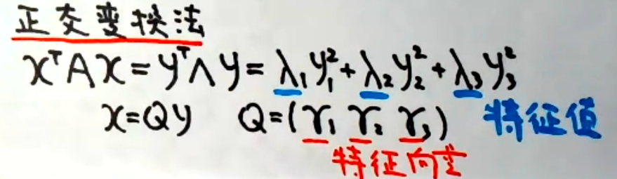

性质定理
二次型$x^{T}Ax$经坐标变换$x=Cy$得二次型$y^{T}By$，其中 $B=C^{T}C$，通俗的讲，就是 二次型矩阵经过任意的一次坐标变换得到新的二次型，前后二次型矩阵合同。
任一二次型都可经坐标变换变成标准型。
配方法
从$x_1$开始先合并再配方，将 f(x)⇒f(y)
正交变换法

例题

说明在正交变换下，A不仅与∧合同，而且A与∧相似
用正交变换化二次型为标准形

若是求正负惯性指数，根据特征值即可得到（特征值是二次型二次项系数✅）
标准型到规范型


标准型到规范性与系数的大小无关，只与系数的正负相关，即正负惯性系数，注意先排序，依次“大于0，等于0，小于0…”
例题

第一问参数的求解用到标准型化成规范型的规律。
第二问的求解实际上就是正交矩阵相似对角化
正定

注意正定矩阵是二次型，所以正定矩阵必对称，检验正定之前，先检验对称性，即证明$A^{T}=A$
正定必要条件
- $a_{ii}>0$
- |A| > 0
正定充分必要条件
- 顺序主子式全大于0
- 特征值大于0
- 正惯性指数 p=n
- $A=C^TEC$，其中C可逆 ▲
经典例题

$(A^{T}A)^{T}=A^TA$，故$A^{T}A$实对称矩阵
现证$\forall X$，有$X^T(A^TA)X>0$
$X^T(A^TA)X=(AX)^{T}AX \geq 0$
现证$(AX)^{T}AX \neq 0$
相当于证 $AX \neq0$
由于A-m×n，且r(A)=n
故 AX=0只有零解
等价于 $\forall X\neq0,AX \neq0$
得证
即$\forall X, X^T(A^TA)X=(AX)^{T}AX > 0$
故$A^TA$为正定矩阵
补充：“反对称矩阵”
$A^T=-A$
规律：
$a_{ii} = 0\text{；}a_{ij}=-a_{ji}$
$|A|=|A^T|=|A^{-1}|=(-1)^n|A|$，即奇数项行列式必为0
合同

相似
若不是实对称矩阵，为普通矩阵，则通过∧作为媒介判断，其中∧为特征值组成的🤓

即 “相似⇒合同，合同⇏相似”